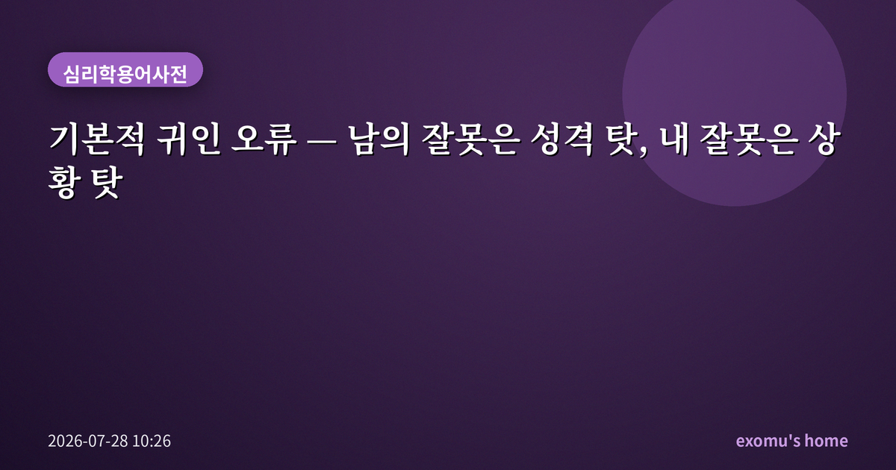
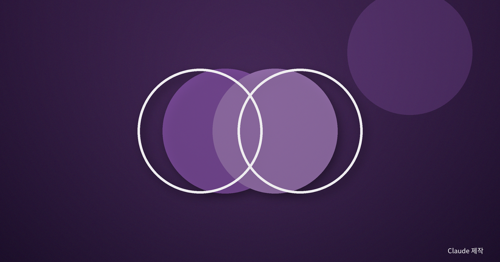
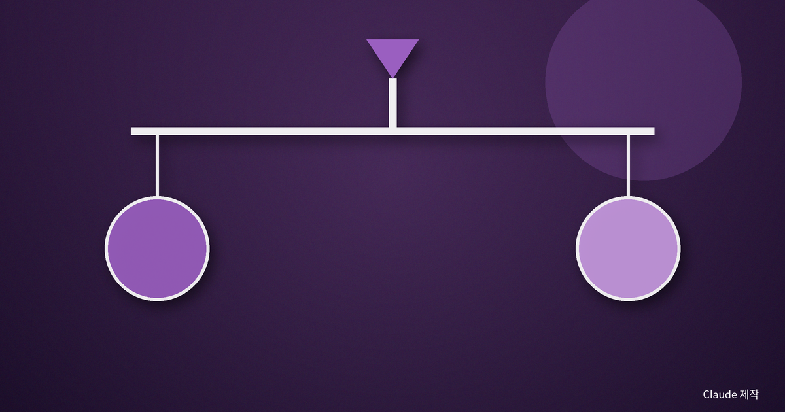
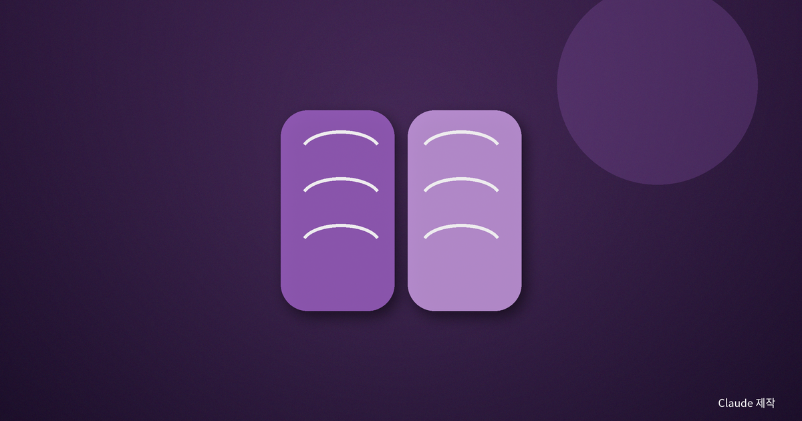
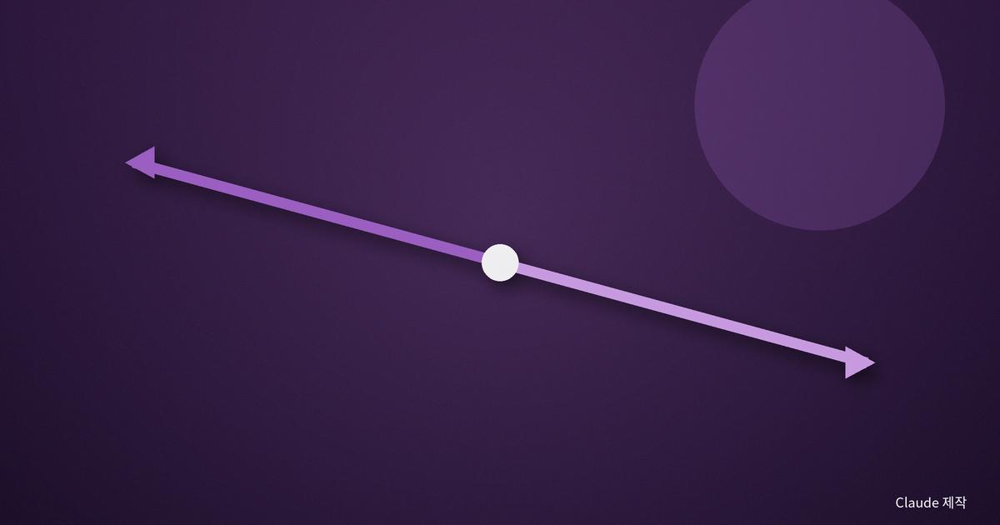

기본적 귀인 오류 — 남의 잘못은 성격 탓, 내 잘못은 상황 탓

정의: 상황을 지우고 성격을 읽는 습관
기본적 귀인 오류(fundamental attribution error)란, 다른 사람의 행동을 설명할 때 그 사람이 처한 상황의 힘을 과소평가하고 그 사람의 성격·기질 탓으로 지나치게 돌리는 경향을 말한다. 약속에 늦은 동료를 보면 '무책임한 사람'이라 판단하지, '오늘 도로가 막혔나' 하고 상황을 먼저 떠올리지는 않는다.
이 편향에는 비대칭이 있다. 같은 지각이라도 내가 늦으면 나는 즉시 '차가 막혀서'라고 상황을 댄다. 남의 행동은 성격으로, 내 행동은 상황으로 읽는 이 어긋남을 '행위자-관찰자 비대칭'이라 부른다. 왜 이런 일이 생길까. 남을 볼 때 우리 눈에 크게 들어오는 것은 '그 사람' 자체다. 그가 처한 배경과 사정은 무대 뒤로 흐릿하게 물러나 있다. 반대로 내가 행동할 때 내 눈앞에 펼쳐진 것은 나를 둘러싼 상황이지 내 얼굴이 아니다. 시선이 향하는 방향이 판단의 방향을 정하는 셈이다.

실험이 보여준 것
1960년대 후반, 두 심리학자는 참가자들에게 어떤 인물이 쓴 글을 읽게 했다. 글쓴이가 특정 입장을 '자유롭게 선택해서' 썼다고 알려준 조건도 있었고, '동전 던지기나 지시에 따라 억지로' 그 입장을 쓰게 됐다고 분명히 알려준 조건도 있었다. 상식대로라면 강제로 쓴 글은 필자의 진짜 생각을 알려주지 못한다. 그런데 참가자들은 강제 조건에서조차 '글쓴이는 실제로 그렇게 믿는 사람'이라고 판단했다. 상황 정보를 손에 쥐고도, 글의 내용을 사람의 속마음으로 읽어버린 것이다.
이 현상에 '기본적 귀인 오류'라는 이름을 붙인 것은 1970년대의 한 사회심리학자였다. 그는 이것이 예외적 실수가 아니라 사람의 사회적 판단에 깔린 기본 설정에 가깝다고 보았다. '기본적'이라는 수식어에는, 이것이 특별히 편견이 심한 사람만의 문제가 아니라 누구에게나 기본값으로 켜져 있는 경향이라는 뜻이 담겨 있다.

일상 속 장면
이 편향은 조용하지만 넓게 퍼져 있다. 마트에서 불친절한 직원을 보면 '성격이 안 좋다'고 결론 내리지, 그가 몇 시간째 쉬지 못했을 가능성은 잘 세지 않는다. 시험을 망친 학생을 두고 '게으르다'고 하기는 쉬워도, 그가 아팠거나 집안 사정이 있었을 상황은 눈에 잘 안 들어온다.
문화에 따라 정도가 다르다는 연구도 있다. 개인의 기질을 중시하는 문화에서 이 편향이 더 강하게 나타나고, 관계와 맥락을 강조하는 문화에서는 상황을 고려하는 설명이 상대적으로 잘 등장한다는 것이다. 편향이 완전히 타고난 것은 아니며, 우리가 세계를 조각내 이해하는 습관과 맞물려 있음을 시사한다.
이 오류는 사회적으로도 값비싸다. 가난이나 실패를 오직 개인의 게으름·무능으로 돌리고 그 뒤의 구조적 조건을 지워버리면, 우리는 엉뚱한 처방을 내리게 된다. 사람을 바꾸라고 다그치는 사이, 정작 바꿔야 할 상황은 그대로 남는다. 누군가를 비난하기 전에 그가 선 자리를 함께 보는 일은, 그래서 단순한 예의가 아니라 문제를 제대로 풀기 위한 조건이기도 하다.

실용적 통찰
이 오류를 아는 것만으로도 관계의 온도가 달라진다. 누군가의 행동에 화가 날 때, 나는 한 박자 멈추고 묻는 연습을 한다. '이 사람이 원래 그런 사람이어서일까, 아니면 지금 어떤 상황에 있어서일까.' 이 질문 하나가 성급한 낙인 대신 여백을 만든다.
동시에 방향을 뒤집어 나 자신에게도 적용해 볼 수 있다. 나는 내 실패는 늘 상황 탓으로 너그럽게 봐주지 않았는가. 남에게는 상황을, 나에게는 책임을—이 균형을 의식적으로 맞추면, 판단은 더 공정해지고 자기 성찰은 더 정직해진다.
연구자들은 이 편향을 줄이는 데 몇 가지 태도가 도움이 된다고 말한다. 판단을 내리기 전에 '내가 저 사람의 상황이었다면 어땠을까'를 구체적으로 그려보는 관점 취하기, 시간을 두고 여러 장면을 관찰해 한 번의 인상으로 성격을 단정하지 않기, 그리고 자신이 언제든 이 오류를 저지를 수 있음을 인정하는 겸손이다. 기본적 귀인 오류를 없앨 수는 없지만, 알아차리는 순간 그 힘은 눈에 띄게 약해진다.
